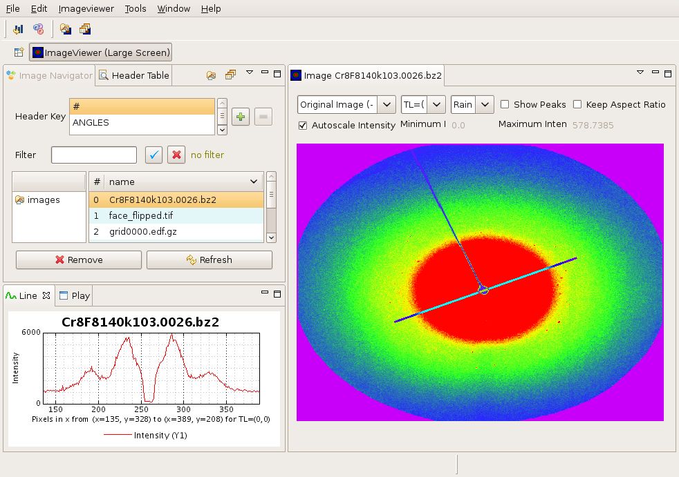

ImageViewer is a program for viewing mainly diffraction images written for the Fable project. It is used to display images as a standalone program or as a plugin in other Fable programs e.g. Peaksearch and Preprocessor.
This application part of a series of Fable graphical applications based on Eclipse.

ImageViewer is written in Java and does all plotting using pure java libraries (JLChart (from Jean-Luc Pons) for 1D, SWT's Image for 2D and OpenGL for 3D). This makes ImageViewer plotting portable across platforms.
ImageViewer uses fabio (a Fable input/ouput library written in Python) for reading various image formats. Because fabio is written in Python, ImageViewer needs to have a Python interpreter (2.5) installed in order to read files. The link between Java and Python is done using Jepp. Fabio is packaged as part of ImageViewer. However the following Python packages have to be installed in order for fabio to work: NumPy and PIL.
ImageViewer is intended to be a workbench for crystallographers to look at images and do basic analysis on them. Suggestions on how to improve ImageViewer and typical tools which should to be added should be send to fable-talk@lists.sourceforge.net. Code contributions in the form of Python or Java code are also welcomed.
Help is available on the following topics :